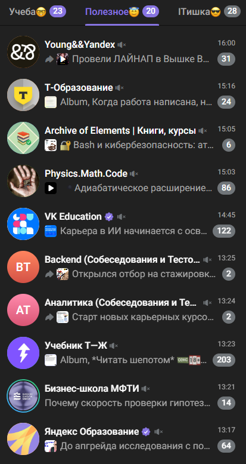

Итоговый проект
TeleFlow
Локальный AI-ассистент для Telegram: превращает поток каналов в структурированное знание и готовые черновики постов.
Прокрутка или стрелки ↑ ↓ · Home / End
Проблема
Каналов и папок становится больше, чем внимания: полезные идеи тонут в шуме, вручную делать выжимку долго, а контент для постов приходится собирать по кускам.

Что это
Локальный Telegram userbot на Telethon: управление командами в ЛС, тематическая база знаний и генерация постов через OpenRouter.
/digest— приоритизированный дайджест из папок Telegram- Forward поста → выбор темы → сохранение в локальную базу
/write <тема>— черновик поста из релевантных материалов/stats,/list,/rm,/mv,/undo— контроль базы
Схема потока
Разметка дайджеста и синтез /write — там, где ИИ даёт выигрыш по времени.
Польза
Один рабочий контур: обзор непрочитанного, архив лучших материалов и черновик поста — без ручного копипаста между чатами и заметками.
Контроль и безопасность
- Доступ только для ID из whitelist (
ALLOWED_USER_IDS) DRY_RUN— безопасный preview без записи в канал иstate.db- Ограничения и таймауты для OpenRouter (батчи, budget, max chars)
- Chunked-отправка длинных сообщений с защитой от Telegram лимитов
- Данные хранятся локально:
data/knowledge/иstate.db
Живое демо за 90 секунд
- 1) Запуск:
python -m teleflow --daemon - 2) В ЛС userbot:
/digest→ получаем сжатый обзор - 3) Forward интересного поста → выбираем тему
- 4)
/write ai-агенты для бизнеса→ получаем черновик публикации - 5)
/statsи/list бизнеспоказывают рост базы знаний
Сценарий демонстрирует весь продуктовый цикл: сбор → отбор → сохранение → генерация.
Время на проект
- Около 8 часов суммарно на проект TeleFlow
- Самое трудное: авторизация/стабильность Telegram-сессии через Telethon
- Второй сложный блок: предсказуемая работа LLM в лимитах времени и токенов
- Отдельная сложность: стабильный доступ через прокси (SOCKS5/MTProto), таймауты и переподключения
Дальнейшее развитие проекта
- Планировщик дайджестов по расписанию и персональные правила отбора
- Полуавтоматический режим: после дайджеста предлагать 2-3 готовых черновика постов на выбор
- Система оценки качества: метки полезности, чтобы улучшать отбор и генерацию на реальных данных
- Развернуть проект на сервере, чтобы сервис работал постоянно и не зависел от локального ПК
С курса
- Контекст важнее длинного промпта: структура папок,
README,.cursorrulesи точечный@-контекст дают стабильный результат - Рабочий цикл: план → реализация → проверка; качество приходит через короткие итерации, а не через «один идеальный запрос»
- Агенты = роли с правилами: у каждого AI-сотрудника должны быть границы, регламент и проверка качества на тестовых задачах
- Работа с MCP, API и внешними сервисами
- Ещё один важный вывод: ИИ нужно направлять и регулярно проверять, потому что без контроля он часто переусложняет архитектуру и может запутаться в логике проекта
Остались вопросы?
Спасибо за внимание!